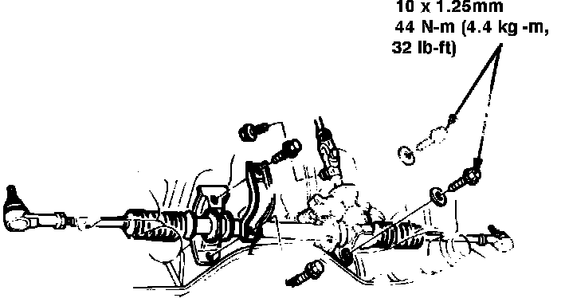

Steering Gear: Service and Repair
Fig. 14 Steering gear replacement. Integra:

1. Remove steering joint cover.
2. Remove steering shaft connector attaching bolts, then pull connector up off pinion shaft.
3. Raise and support front of vehicle and remove front wheels.
4. Remove cotter pins and loosen tie rod end ball joint nuts halfway.
5. Break ball joints loose using a suitable ball joint remover, then remove nuts and lift tie rod ends from steering knuckles.
6. On models equipped with manual transaxle, remove shift extension from transaxle case, then slide pin retainer aside and drive out spring pin to disconnect shift rod.
7. On models equipped with automatic transaxle, remove shift cable guide from floor and pull shift cable down by hand.
8. On all models, drain power steering fluid into a suitable container.
9. Disconnect exhaust header pipe from manifold.
10. Thoroughly clean steering gear unit and surrounding area, then disconnect three hydraulic lines from valve body housing.
11. Remove steering gear attaching bolts and the gear, Fig. 14. Lower unit until end of pinion shaft clears hole in channel, then rotate it forward until shaft is pointing rearward. Slide gear to the right until tie rod clears rear beam, then lower unit from vehicle.
12. Reverse procedure to install. Torque bracket bolts to 27 ft. lbs. on 1986 models, or 29-32 ft. lbs. on 1987-88 models.